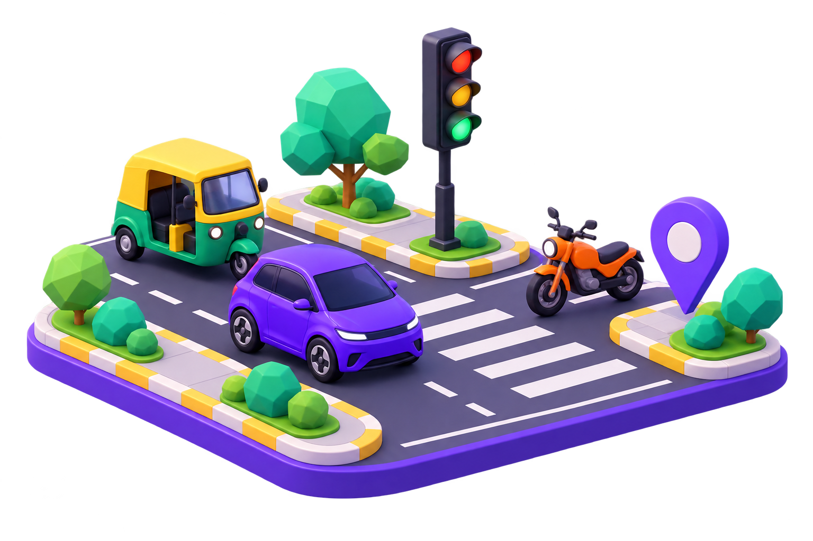
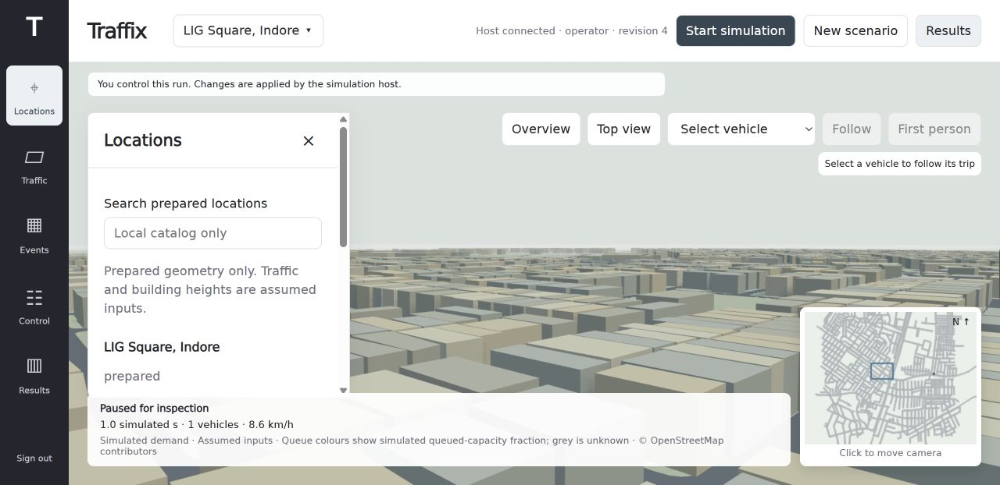

See what is happening
Combine source-labelled simulated sensors and opted-in phone probes. Missing or stale observations stay unknown.
INTELLIGENT TRAFFIC CONGESTION RESPONSE
Traffic changes every minute. The response should too. Traffix brings road observations, adaptive signals and driver guidance into one shared system.
Built for Indian mixed traffic · Starting at LIG Square, Indore

THE PROBLEM
Rush hour, a blocked exit, mixed vehicle speeds or an unexpected event can turn one junction into a network-wide queue. Operators need evidence before choosing a response.
Combine source-labelled simulated sensors and opted-in phone probes. Missing or stale observations stay unknown.
Inspect queues and receiving space. Test signal timing and reviewed alternate routes without bypassing safety checks.
Compare complete, matched runs against fixed timing. Show journey delay and modeled emissions, including results that do not improve.
TRY THE IDEA
This interactive illustration explains queue-responsive signals. It runs entirely in your browser; it is not the SUMO engine or measured LIG traffic.
With queue response enabled, the illustration chooses the more queued direction after a minimum green, with a maximum green and a clearance interval. The real host adds receiving-space checks and records worker-confirmed actions. No benefit percentage is inferred from this illustration.
FROM IDEA TO SYSTEM
Three connected parts, built so we can test traffic responses before taking them into the real world.
OpenStreetMap roads, mixed SUMO vehicles, a navigable scene, event controls and shared admin access.

Actual unified-build screenshot · simulated traffic and assumed demand
A colourful companion with a personal profile, road-learning material, consent controls and an own-vehicle ride view.
MOVE WITH CONFIDENCE
Review an alternative before accepting.
↗Keep the junction clear.
→Interface illustration
Native app built; unified-host integration is in progress.
UNDER THE HOOD
AN HONEST PROTOTYPE
Our aim is earlier congestion detection and better responses. We distinguish implemented features from outcomes still to be demonstrated.
LIG 3D simulation, mixed vehicles, operator controls, browser phone probes and native Android app.
Native app ↔ unified host integration, multi-device validation and completed congested policy comparisons.
Held-out short-term forecast validation, calibrated local vision, emergency priority and more reviewed Indore locations.
BUILDING TRAFFIX TOGETHER
Explore the code, inspect the evidence, and help us build a response system that earns its recommendations.